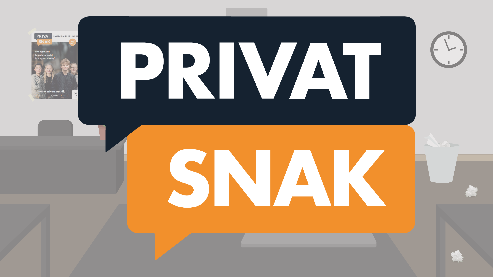

I uge 42 havde vi Animation - et forløb som var både helt fuldkommen fantastisk og fuldkommen forfærdeligt!
Det var utrolig sjovt lige indtil det blev uoverskueligt. Jeg nød hvert et øjeblik med skitsering og arbejdet i Illustrator. Det var sjovt ar arbejde med karaktererne og med de 12 trin i animinering. Og det var også sjovt at arbejde i Java Script. Det var sjovt at få ting til at bevæge sig, selvom jeg virkelig skulle holde tungen lige i munden, både med øvelsesopgaverne, men specielt med min egen. På et tidspunkt blev jeg ramt af sygdom og var væk i 2 dage og da jeg kom tilbage var jeg fuldkommen sat af. Jeg havde svært ved at komme op på hesten igen hvad angik JS. Min walkcycle drillede og jeg var lige ved at opgive totalt - men så var der et par ting der faldt på plads.
Jeg nåede desværre ikke at blive helt færdig med min animation. En del af historien mangler og jeg fik ikke integreret et spil. Til gengæld fik jeg langt om længe min mus til at bevæge sig rigtigt og min ugle til at falde om oppe i træet. De små sejre!
Jeg håber jeg en dag får tid til at arbejde videre med min egen animation i JS så den kan blive færdig.
Efter vi havde afluttede vores individuelle animation, blev vi indelt i grupper og blev introduceret for næste animationsopgave, hvilket var en kundeopgave for Sex og Samfund.
SCRUM - BRUGERUNDERSØGELSER - MÅLGRUPPE - FLOWCHARTS - TRELLO - STIL -
